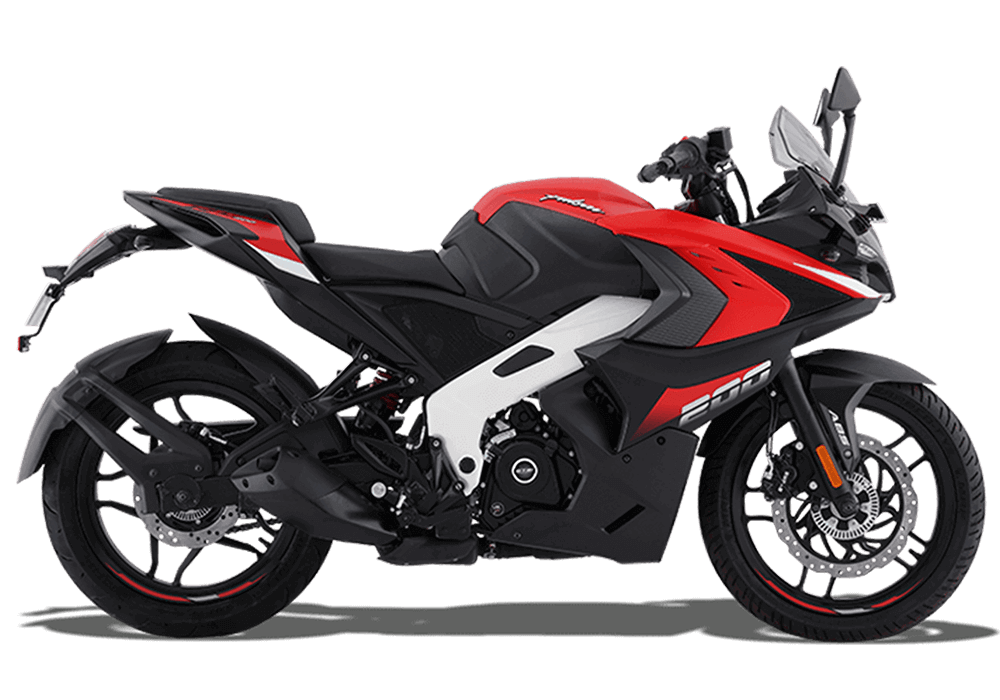

About us
The Bajaj Pulsar is an iconic Indian motorcycle. Since its inception, the Pulsar created a new segment called ‘Sports Biking’ in Indian motorcycling and redefined motorcycle riding for the Indian youth. Presently, the cutting-edge Bajaj Pulsar specifications are 125-250 cc engines, front and rear disc brakes, nitrox-mono-shock suspension, tubeless tyres, among others. Today, the Pulsar motorcycle is a perfect combination of style and performance. The Bajaj Pulsar features projector headlamps, ABS, fuel-injection systems, and a DTS-i engine. Pulsar 250 & Pulsar N160 are the latest addition to the Pulsar range.
RS-200
NS-200